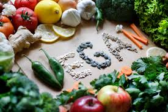

Bienvenid@ al mundo vegetal
Explorá los beneficios del vegetarianismo y veganismo, y accedé a recetas fáciles y nutritivas.
Alimentarnos con amor, vivir con conciencia
En VerdeVida creemos que las pequeñas decisiones diarias pueden transformar tu bienestar y también el mundo que habitamos. Alimentarse bien no es solo una cuestión de salud, sino un acto de empatía hacia uno mismo, hacia los demás y hacia el planeta.
Cada receta, cada hábito que elegimos cultivar con conciencia, es una forma de cuidarnos y de cuidar. Te invitamos a nutrirte de alimentos frescos, de gestos amables y de momentos que te hagan bien.
Que tu plato sea color, energía y amor. Y que tu vida refleje ese mismo cuidado.
Comenzá hoy a crear tu bienestar, paso a paso, bocado a bocado 🍃